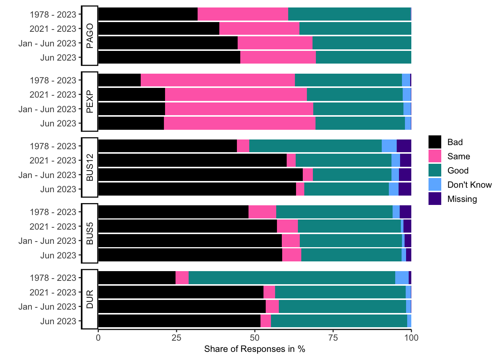
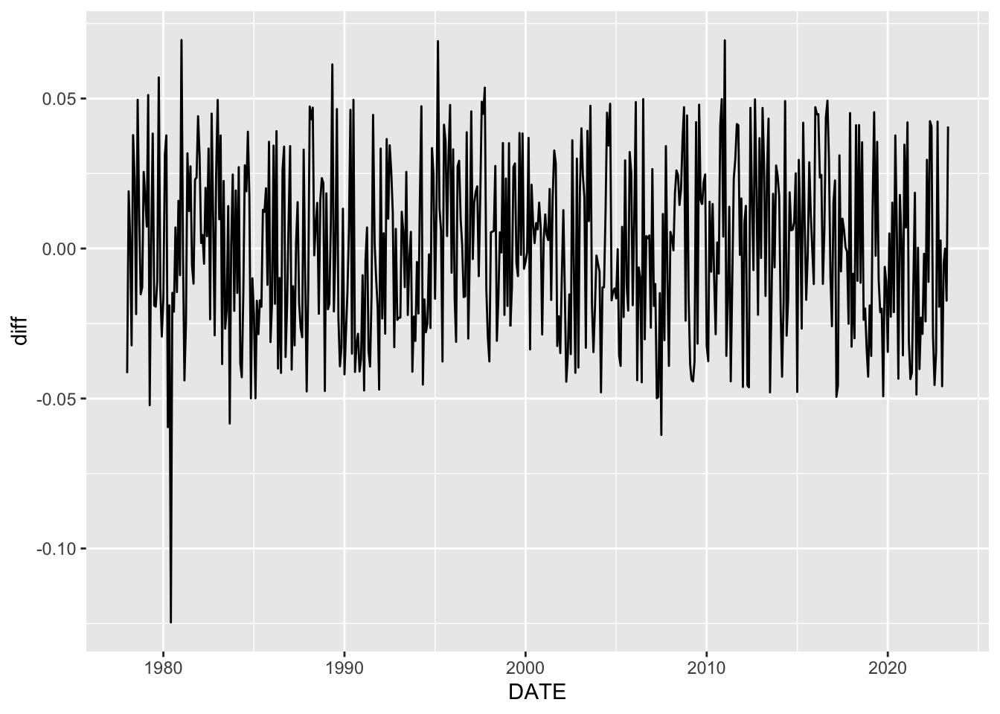

20 Michigan Consumer Survey
20.1 Introduction
The University of Michigan’s Survey of Consumers has been capturing the mood of U.S. households about the economy since the late 1940s. The monthly survey captures U.S. households’ views about the economy, providing essential insights into their perceptions and attitudes towards the U.S. economic landscape. The surveys play a significant role in shaping economic and policy decisions, given that consumer spending accounts for approximately 70% of the U.S. economy.
The University of Michigan combines the survey into three key indices: the Index of Consumer Sentiment (ICS), the Index of Current Economic Conditions (ICC), and the Index of Consumer Expectations (ICE). The ICS, frequently cited in newspapers, economic studies, and financial reports, provides a comprehensive view of consumer confidence every month. The ICC concentrates on consumer attitudes towards the current economic environment, while the ICE forecasts future economic conditions.
These famous consumer indices are based on just five out of the survey’s fifty questions. This chapter not only explains how the ICS, ICC, and ICE are made, but also looks at the rest of the survey data to create new consumer indices.
20.2 Conducting the Survey
Detailed information about the University of Michigan’s Surveys of Consumers is readily accessible on their official website at data.sca.isr.umich.edu. The survey information section of the website provides critical details about the survey process. This includes a thorough survey description, an overview of the sample design, and the actual questionnaire used in the survey. Below is some of the information summarized.
Sample Population
The Surveys of Consumers samples adults 18 years of age and older residing in households in the continental U.S. It’s designed to be a representative sample of all such households.
Sampling Method
The survey uses a rotating panel design, with a new panel of respondents each month, selected to reflect the demographic and geographic distribution of the U.S. population.
Data Collection
Telephone interviews are the primary mode of data collection, although they have been increasingly integrating web-based interviews in recent years. Interviews typically last about 15 minutes.
Survey Questions
The survey consists of approximately 50 core questions, and the rest of the questionnaire can vary depending on current economic events. The core questions elicit information on respondents’ financial situation, buying attitudes, and expectations about future economic conditions.
Survey Frequency and Timing
Starting from the late 1940s, the Surveys of Consumers were initially conducted quarterly. However, since the mid-1970s, the frequency has increased to monthly. Each month’s survey involves about 500 interviews, with roughly 50-60% completed by the 10th of the month. Preliminary results are released mid-month, with remaining interviews completed by month-end. Final results are published at the beginning of the following month.
20.3 Michigan Consumer Indices
20.3.1 Index of Consumer Sentiment (ICS)
The ICS is a composite index that captures consumers’ perceptions of their financial situation and attitudes about the economy in general. It is derived from five questions related to personal finances, general economic conditions, and purchasing conditions.
To calculate the Index of Consumer Sentiment (ICS), we first compute the relative scores for each of the five index questions (\(x_1,...,x_5\) listed below). The relative score is the percent of favorable replies minus the percent of unfavorable replies, with 100 added. Each relative score is then rounded to the nearest whole number. The ICS is calculated using the following formula:
\[ ICS = \frac{x_1+x_2+x_3+x_4+x_5}{6.7558} + 2.0 \]
The constant 2.0 is added to correct for sample design changes from the 1950s.
The ICS is derived from the responses to the following five questions:
\(x_1\) = PAGO_R: “We are interested in how people are getting along financially these days. Would you say that you (and your family living there) are better off or worse off financially than you were a year ago?”
\(x_2\) = PEXP_R: “Now looking ahead–do you think that a year from now you (and your family living there) will be better off financially, or worse off, or just about the same as now?”
\(x_3\) = BUS12_R: “Now turning to business conditions in the country as a whole–do you think that during the next twelve months we’ll have good times financially, or bad times, or what?”
\(x_4\) = BUS5_R: “Looking ahead, which would you say is more likely–that in the country as a whole we’ll have continuous good times during the next five years or so, or that we will have periods of widespread unemployment or depression, or what?”
\(x_5\) = DUR_R: “About the big things people buy for their homes–such as furniture, a refrigerator, stove, television, and things like that. Generally speaking, do you think now is a good or bad time for people to buy major household items?”
The responses to these questions are combined to create the indices. For each question, there are a certain number of points assigned for positive, neutral, and negative responses. After the responses are scored, they are combined to create each index. The indices are then normalized to a base year (currently 1966 = 100) to create the final index values.
20.3.2 Index of Current Economic Conditions (ICC)
The ICC specifically focuses on consumers’ perceptions of their current financial situation and whether it’s a good time to buy big-ticket items like cars and homes. It is based on responses to just two questions.
The ICC is constructed from questions 1 and 5 from the ICS list using the following formula: \[ ICC = \frac{x_1+x_5}{2.6424} + 2.0, \qquad \]
20.3.3 Index of Consumer Expectations (ICE)
The ICE aims to gauge consumer expectations for the future, specifically regarding their financial situation, general economic conditions, and purchasing conditions in the next year and next five years. It is derived from the remaining three questions.
The ICE is constructed from questions 2, 3, and 4 from the ICS list using the following formula: \[ ICE = \frac{x_2+x_3+x_4}{4.1134} + 2.0 \]
20.3.4 Importing in R
Chapter 5.3 illustrates how to import the three consumer indices, in addition to a selection of time series, which include the five that form the ICS, ICE, and ICC. For detailed descriptions of these time series, please refer to the Time-Series Variable Codebook provided on the survey’s website.
20.4 Creating Custom Consumer Indices
While the ICC, ICE, and ICS are the most well-known indices generated from the Michigan Consumer Survey data, researchers and analysts can create custom indices based on their specific interests. These custom indices might focus on specific demographics, geographic regions, or consumer attitudes about specific sectors of the economy.
Consider, for example, an index that captures consumers’ attitudes towards the housing market. This could be particularly useful for real estate investors and homebuilders. Such an index could be created by focusing on survey questions about consumers’ perceptions of current housing prices, their expectations for future housing prices, and their perceptions of the current home buying conditions.
The simplest way to create a new index is by combining several time series from the Time-Series Variable Codebook (see Chapter 5.3 on how to import this data in R). These time series aggregate individual responses into a single observation per time period.
A more advanced approach to creating a new index involves working with the raw individual-level surveys then turning them into an index. This method allows for insights into the degree of disagreement among consumers, rather than just looking at averages. The next sections will explain how to work with these individual surveys and form them into time series.
20.5 Importing and Cleaning Individual-Level Surveys
In this chapter, we will go through the process of importing and cleaning the individual-level Michigan Consumer Survey data. This process involves downloading the raw data, importing the required R packages, importing data labels, making them tidy, and finally cleaning the data set. Let’s get started.
20.5.1 Data Source
The data for this analysis is obtained from the University of Michigan Consumer Survey website. Follow the steps below to get the links:
- Visit data.sca.isr.umich.edu
- Click on “Data” - “Downloads” - “Cross-Section Archive”
- Click “CSV file (Comma Separated Values with header record)” and “DDI (XML)”
- Select “All” everywhere and click “continue”
- Click “Create the Files”
- Right click on the “Data file”, copy link, and save the link as
data_file - Right click on the “DDI XML file”, copy link, and save the link as
data_label_file
Here are the direct links used in this example:
20.5.2 Data Labels
First, we import the labels and convert them into a tidy format, ready for analysis. This involves converting the imported list to a tibble and tidying up the labels.
#================================================================================================
# Data Labels
#================================================================================================
#------------------------------------------------------------------------------------------------
# Import labels
#------------------------------------------------------------------------------------------------
raw_labels_list <- read_xml(data_label_file) %>% as_list %>% as_tibble
#------------------------------------------------------------------------------------------------
# Make labels tidy
#------------------------------------------------------------------------------------------------
# Convert list to tibble
raw_labels <- raw_labels_list %>%
unnest_longer(codeBook, indices_to = "folder") %>%
filter(folder == "var") %>%
group_by(index = row_number()) %>%
mutate(variable = modify_in(codeBook, list(1), attributes)) %>%
unnest_wider(variable) %>%
select(-names, -folder) %>%
ungroup() %>%
select(-index) %>%
unnest_longer(codeBook, values_to = "value_as_list", indices_to = "feature") %>%
mutate(name = factor(name, levels = unique(name), ordered = TRUE),
feature = factor(feature, levels = unique(feature), ordered = TRUE))
# Extract unnamed vs. named list elements
raw_labels <- bind_rows(
# unnamed list elements
raw_labels %>% filter(lengths(value_as_list) > 1) %>%
unnest_wider(value_as_list, transform = as.character),
# named list elements
raw_labels %>% filter(lengths(value_as_list) <= 1) %>%
hoist(value_as_list, labl = list(1, 1)) %>%
select(-value_as_list)) %>%
# back to original order
arrange(name, feature)
# Remove "\n" and spaces
raw_labels <- raw_labels %>%
mutate(across(c("labl", "catValu", "txt"),
function(x) str_trim(str_remove_all(x, "\\\\n"))),
dcml = as.integer(dcml),
catValu = as.integer(catValu))
#------------------------------------------------------------------------------------------------
# Rename and extract relevant labels
#------------------------------------------------------------------------------------------------
# Check out the following columns, which seem to be useless
if(FALSE){
raw_labels %>% filter(!is.na(item))
raw_labels %>% filter(!is.na(range))
raw_labels %>% filter(!is.na(txt) & !is.na(labl))
raw_labels %>% filter(feature == "invalrng" & !is.na(labl))
raw_labels %>% pull(feature) %>% unique()
}
# Extract the relevant columns and make tidy
var_labels <- raw_labels %>%
select(variable = name, feature = feature, value_cat = catValu,
info = labl, txt = txt, dcml = dcml) %>%
filter(!(is.na(info) & is.na(value_cat)) & feature %in% c("labl", "qstn", "catgry")) %>%
unite("info", c("info", "txt"), sep = "_", na.rm = TRUE) %>%
mutate(feature = factor(feature, levels = levels(feature),
labels = str_replace_all(
levels(feature),
c("labl" = "label_var", "qstn" = "question", "catgry" = "label_cat")))) %>%
pivot_wider(names_from = feature, values_from = info) %>%
mutate(label_var = str_replace_all(tools::toTitleCase(tolower(label_var)),
c(" Id " = " ID ", " Id$" = " ID", "Rdd" = "RDD")))
# Rename category "NA" = "Not Applicable" so that it is not confused with NA = missing
var_labels <- var_labels %>%
mutate(label_cat = ifelse(label_cat == "NA", "Not Applicable", label_cat))
# Remove unnecessary rows
var_labels <- var_labels %>%
group_by(variable) %>%
mutate(across(c("label_var", "question"),
function(x) ifelse(is.na(x), first(x[!is.na(x)]), x))) %>%
filter(!(n() > 1 & is.na(label_cat))) %>%
ungroup() %>%
relocate(variable, label_var, dcml, value_cat, label_cat, question)
#------------------------------------------------------------------------------------------------
# Create new variables and missing labels
#------------------------------------------------------------------------------------------------
# Labels for new variables defined later
new_variables <- tribble(
~variable, ~label_var, ~dcml, ~question,
"DATE", "Date", NA, "Date",
"R", "Respondent ID", 0L,
paste("Respondent ID that remains fixed over time",
"if the respondent participates multiple times.")
)
# Add new labels to existing labels
var_labels <- new_variables %>%
bind_rows(var_labels)
# Labels for categories that were not properly defined
new_categories <- tribble(
~variable, ~value_cat, ~label_cat,
"HOMEAMT", 9999998L, "DK",
"INVAMT", 99999998L, "DK"
)
new_categories <- var_labels %>%
select(-label_cat, -value_cat) %>%
distinct() %>%
right_join(new_categories, by = c("variable"))
# Add new labels to existing labels
var_labels <- var_labels %>%
bind_rows(new_categories) %>%
mutate(variable = factor(variable,
levels = c("CASEID", setdiff(unique(variable), "CASEID")),
ordered = TRUE)) %>%
arrange(variable, value_cat)
# Print labels
var_labels## # A tibble: 1,022 × 6
## variable label_var dcml question value_cat label_cat
## <ord> <chr> <int> <chr> <int> <chr>
## 1 CASEID Case Identificati… 0 <NA> NA <NA>
## 2 DATE Date NA Date NA <NA>
## 3 R Respondent ID 0 Respond… NA <NA>
## 4 YYYYMM Survey Year & Mon… 0 Survey … NA <NA>
## 5 YYYYQ Survey Year & Qua… 0 Survey … NA <NA>
## 6 YYYY Survey Year 0 Survey … NA <NA>
## 7 ID Interview ID 0 Intervi… NA <NA>
## 8 IDPREV Previous ID in RDD 0 Previou… NA <NA>
## 9 DATEPR Date of Previous … 0 Previou… NA <NA>
## 10 ICS Index of Consumer… 2 The Ind… NA <NA>
## # ℹ 1,012 more rows20.5.3 Importing the Data Set
The data is imported as a CSV file and cleaned. The data includes creating new date variables and respondent ID that remains constant across multiple survey participation.
#================================================================================================
# Data Set
#================================================================================================
#------------------------------------------------------------------------------------------------
# Import data set
#------------------------------------------------------------------------------------------------
CS_raw <- read_csv(data_file)
CS_tidy <- CS_raw
#------------------------------------------------------------------------------------------------
# Create date variables
#------------------------------------------------------------------------------------------------
CS_tidy <- CS_tidy %>%
mutate(DATE = as.Date(paste0(CS_tidy$YYYYMM, "01"), format = "%Y%m%d"),
DATEPREV = as.Date(paste0(CS_tidy$DATEPR, "01"), format = "%Y%m%d")) %>%
relocate(CASEID, DATE, DATEPREV)
#------------------------------------------------------------------------------------------------
# Respondents can participate multiple times -> Generate respondent ID that remains fixed
#------------------------------------------------------------------------------------------------
# ID and IDPREV count individuals from scratch every period, whereas CASEID is unique
if(FALSE){
CS_tidy %>% select(CASEID) %>% duplicated() %>% sum()
CS_tidy %>% select(ID) %>% duplicated() %>% sum()
CS_tidy %>% select(ID, DATE) %>% duplicated() %>% sum()
}
# Data matches ID/DATE with IDPREV/DATEPREV, but doesn't go further back - find oldest ID/DATE pair
r_matches <- CS_tidy %>% filter(!is.na(IDPREV) & !is.na(DATEPREV)) %>% select(ID, DATE, IDPREV, DATEPREV)
while(nrow(semi_join(r_matches, r_matches, by = c("IDPREV" = "ID", "DATEPREV" = "DATE"))) > 0){
r_matches <- r_matches %>%
left_join(r_matches, by = c("IDPREV" = "ID", "DATEPREV" = "DATE"), suffix = c("", "2")) %>%
mutate(IDPREV = if_else(!is.na(IDPREV2), IDPREV2, IDPREV),
DATEPREV = if_else(!is.na(DATEPREV2), DATEPREV2, DATEPREV)) %>%
select(-IDPREV2, -DATEPREV2)
}
# Create "R" (Respondent) variable that remains fixed over time
r_matches <- r_matches %>%
mutate(R = paste(IDPREV, DATEPREV, sep = "_"))
# Include "R" in the data set
CS_tidy <- CS_tidy %>%
left_join(select(r_matches, c("R", "ID", "DATE")), by = c("ID", "DATE")) %>%
relocate(DATE, R) %>%
mutate(R = ifelse(test = is.na(IDPREV),
yes = paste(ID, DATE, sep = "_"),
no = R)) %>%
# Use numbers for "R" from 1 to length(unique(CS_tidy$R)) instead of R = ID_DATE
mutate(R = as.numeric(factor(R, levels = unique(R)))) %>%
select(-DATEPREV)
# Check how many times the same respondent participated in the survey
if(FALSE){
CS_tidy %>% filter(is.na(R))
CS_tidy %>% count(R) %>% group_by(n) %>%
summarize(freq = n(), sum = sum(n))
}
# Add variable labels
attr(CS_tidy, "labels") <- var_labels
# Print data
CS_tidy## # A tibble: 312,130 × 113
## DATE R CASEID YYYYMM YYYYQ YYYY ID IDPREV DATEPR
## <date> <dbl> <dbl> <dbl> <dbl> <dbl> <dbl> <dbl> <dbl>
## 1 1978-01-01 1 1 197801 19781 1978 1 NA NA
## 2 1978-01-01 2 2 197801 19781 1978 2 NA NA
## 3 1978-01-01 3 3 197801 19781 1978 3 NA NA
## 4 1978-01-01 4 4 197801 19781 1978 4 NA NA
## 5 1978-01-01 5 5 197801 19781 1978 5 NA NA
## 6 1978-01-01 6 6 197801 19781 1978 6 NA NA
## 7 1978-01-01 7 7 197801 19781 1978 7 NA NA
## 8 1978-01-01 8 8 197801 19781 1978 8 NA NA
## 9 1978-01-01 9 9 197801 19781 1978 9 NA NA
## 10 1978-01-01 10 10 197801 19781 1978 10 NA NA
## # ℹ 312,120 more rows
## # ℹ 104 more variables: ICS <dbl>, ICC <dbl>, ICE <dbl>,
## # PAGO <dbl>, PAGOR1 <dbl>, PAGOR2 <dbl>, PAGO5 <dbl>,
## # PEXP <dbl>, PEXP5 <dbl>, INEXQ1 <dbl>, INEXQ2 <dbl>,
## # INEX <dbl>, RINC <dbl>, BAGO <dbl>, BEXP <dbl>, BUS12 <dbl>,
## # BUS5 <dbl>, NEWS1 <dbl>, NEWS2 <dbl>, UNEMP <dbl>,
## # GOVT <dbl>, RATEX <dbl>, PX1Q1 <dbl>, PX1Q2 <dbl>, …20.5.4 Long Format
Convert the data from wide to long format. This changes the layout of the data such that each row is an observation, and each column is a variable.
#================================================================================================
# Long Format
#================================================================================================
# Convert wide (= tidy, each column is a variable) to long format
CS <- CS_tidy %>%
pivot_longer(cols = -c("CASEID", "R", "DATE", "WT"),
names_to = "variable",
values_to = "value",
values_transform = as.numeric,
values_drop_na = TRUE)
# Keep label attributes
attr(CS, "labels") <- attr(CS_tidy, "labels")
# Add variable labels
CS <- CS %>%
left_join(
y = attr(CS, "labels") %>%
select(c("variable", "label_var", "dcml")) %>%
distinct(),
by = "variable"
)
# Add factor labels
CS <- CS %>%
mutate(value_cat = ifelse(dcml == 0, as.integer(value), NA_integer_)) %>%
left_join(
y = attr(CS, "labels") %>%
select(c("variable", "label_cat", "value_cat")),
by = c("variable", "value_cat")
)
# Separate between categorical values and numerical values
CS <- CS %>%
mutate(value_cat = ifelse(!is.na(label_cat), value_cat, NA_integer_),
value = ifelse(!is.na(value_cat), NA_real_, value))
# Organize data
CS <- CS %>%
mutate(variable = factor(variable, levels = unique(variable), ordered = TRUE)) %>%
arrange(DATE, R, variable, value_cat) %>%
relocate(CASEID, DATE, R, WT, variable, dcml, value, value_cat, label_cat, label_var)
# Check if there is only one answer per CASEID, person, time period, and question:
if(FALSE){
CS %>% count()
CS %>% distinct(CASEID, variable) %>% count()
}
# Print data
CS## # A tibble: 23,732,842 × 10
## CASEID DATE R WT variable dcml value value_cat
## <dbl> <date> <dbl> <dbl> <ord> <int> <dbl> <int>
## 1 1 1978-01-01 1 0 YYYYMM 0 1.98e5 NA
## 2 1 1978-01-01 1 0 YYYYQ 0 1.98e4 NA
## 3 1 1978-01-01 1 0 YYYY 0 1.98e3 NA
## 4 1 1978-01-01 1 0 ID 0 1 e0 NA
## 5 1 1978-01-01 1 0 ICS 2 7.67e1 NA
## 6 1 1978-01-01 1 0 ICC 2 1.16e2 NA
## 7 1 1978-01-01 1 0 ICE 2 5.13e1 NA
## 8 1 1978-01-01 1 0 PAGO 0 NA 3
## 9 1 1978-01-01 1 0 PAGOR1 0 NA 99
## 10 1 1978-01-01 1 0 PAGOR2 0 NA 0
## # ℹ 23,732,832 more rows
## # ℹ 2 more variables: label_cat <chr>, label_var <chr>20.5.5 Saving the Data
The cleaned data is saved as both CSV and RDS files under the downloads folder.
# Create downloads folder
dir.create("downloads")
# Save data as RDS files
saveRDS(CS_tidy, file.path("downloads", "CS_tidy.rds"))
saveRDS(CS, file.path("downloads", "CS.rds"))
# Save data as CSV files
write_csv(CS_tidy, file.path("downloads", "CS_tidy.csv"))
write_csv(CS, file.path("downloads", "CS.csv"))
write_csv(attr(CS, "labels"), file.path("downloads", "CS_labels.csv"))
# Save raw data
write_csv(CS_raw, file.path("downloads", "CS_raw_data.csv"))
writeLines(readLines(data_label_file), file.path("downloads", "CS_raw_labels.txt"))That wraps up the process of importing and cleaning the Michigan Consumer Survey data. You can now proceed to analyze the data. To load the data in a future session, you can use the readRDS() function.
20.6 Exploring Individual-Level Data
Let’s visualize some of the individual-level data:
#================================================================================================
# Individual-Level Analysis
#================================================================================================
# Load packages
library("tidyverse")
library("ggplot2")
library("quantmod")
library("lubridate")
# Colorblind-friendly Figure Style
cb_col <- c("#000000","#004949","#009292","#ff6db6","#ffb6db",
"#490092","#006ddb","#b66dff","#6db6ff","#b6dbff",
"#920000","#924900","#db6d00","#24ff24","#ffff6d")
fig_style <- list()
fig_style$color <- cb_col[c(1, 4, 3, 9, 6, 12, 2, 11, 13, 5, 7, 8, 10, 14, rep(1, 100))]
fig_style$alpha <- c(1, .8, 1, 1, 1, rep(.5, 100))
fig_style$linetype <- rep(1, 100)
fig_style$size <- c(.7, .9, .7, 1.3, .4, 1, .4, 1.3, .7, 1, rep(.7, 100))
# Load data
CS <- readRDS("downloads/CS.rds")
# Input
cs_select <- c("PAGO", "PEXP", "BUS12", "BUS5", "DUR")
# Extract relevant data
cs_CS <- CS %>%
filter(variable %in% c("R", "DATE", cs_select))
# Normalize answers across variables
cs_CS <- cs_CS %>%
mutate(category = factor(value_cat,
levels = c(5, 4, 3, 2, 1,
8, 9, 98, 99),
labels = c("Bad", "Bad", "Same", "Good", "Good",
"Don't Know", "Missing", "Don't Know", "Missing"),
ordered = TRUE))
# Select specific dates
date_now <- max(cs_CS$DATE)
recent_dates <- add_with_rollback(date_now, - c(months(0), months(6), months(12)))
# Aggregation
cs_freq <- cs_CS %>%
group_by(variable, category) %>%
summarize(n = sum(WT),
n_now = sum(WT[DATE == date_now]),
n_prev = sum(WT[format(DATE, "%Y") == format(date_now, "%Y")]),
n_prev2 = sum(WT[format(DATE, "%Y") %in%
as.character(as.numeric(format(date_now, "%Y")) - (0:2))])) %>%
ungroup(category) %>%
summarize(category = category,
freq = 100 * n / sum(n),
freq_now = 100 * n_now / sum(n_now),
freq_prev = 100 * n_prev / sum(n_prev),
freq_prev2 = 100 * n_prev2 / sum(n_prev2)) %>%
ungroup() %>%
pivot_longer(cols = -c("variable", "category"), names_to = "date", values_to = "freq")
# Labeling
cs_freq <- cs_freq %>%
mutate(date = factor(date, levels = rev(c("freq", "freq_prev2", "freq_prev", "freq_now")),
labels = rev(c(paste0("1978", " - ", format(date_now, "%Y")),
paste0(as.numeric(format(date_now, "%Y")) - 2, " - ",
format(date_now, "%Y")),
paste0("Jan - ", format(date_now, "%b "), format(date_now, "%Y")),
format(date_now, "%b %Y"))),
ordered = TRUE))
# Make plot
cross_plot <- cs_freq %>% ggplot(aes(x = freq, y = date, fill = category))+
geom_col(position = position_stack(reverse = TRUE))+
scale_x_continuous(expand = c(0, 0))+
scale_fill_manual(name = NULL, values = fig_style$color)+
facet_grid(rows = vars(variable), switch = "both")+
labs(x = "Share of Responses in %", y = "")+
theme_classic()+
theme(axis.title.x = element_text(size = 9),
legend.key.size = unit(.5, "cm"))
# Show plot
cross_plot
20.7 Replicate ICS
Let’s use the individual-level data to reproduce the Index of Consumer Sentiment (ICS). You can tailor this process to create any index based on any set of questions.
But first, let’s define the recession shade function, as discussed in Chapter 11.6.2:
#--------------------------------
# Recession shades
#--------------------------------
# Load NBER based recession indicators for the United States
quantmod::getSymbols("USRECM", src = "FRED")
# Create a data frame with dates referring to start and end of recessions
REC <- data.frame(index = zoo::index(USRECM), USRECM = zoo::coredata(USRECM))
REC <- rbind(list(REC[1, "index"], 0), REC, list(REC[nrow(REC), "index"], 0))
REC$dUSRECM <- REC$USRECM - c(NA, REC$USRECM[-nrow(REC)])
REC <- data.frame(rec_start = REC$index[REC$dUSRECM == 1 & !is.na(REC$dUSRECM)],
rec_end = REC$index[REC$dUSRECM == -1 & !is.na(REC$dUSRECM)])
# Add a ggplot() layer that draws rectangles for those recession periods
geom_recession_shades <- function(xlim = c(min(REC$rec_start), max(REC$rec_end))){
geom_rect(data = REC[REC$rec_start >= xlim[1] & REC$rec_end <= xlim[2], ],
inherit.aes = FALSE,
aes(xmin = rec_start, xmax = rec_end, ymin = -Inf, ymax = +Inf),
fill = "black", alpha = .15)
}Now construct the ICS:
#================================================================================================
# Construct the Index of Consumer Sentiment
#================================================================================================
# Input
ics_select <- c("PAGO", "PEXP", "BUS12", "BUS5", "DUR")
ics_variables <- attr(CS, "labels") %>%
select(variable, label_var, question) %>%
distinct() %>%
filter(variable %in% cs_select) %>%
mutate(variable = factor(x = variable, levels = cs_select, ordered = TRUE)) %>%
arrange(variable)
# Standardize variables
ics_data <- CS %>%
filter(variable %in% ics_variables$variable) %>%
mutate(category = factor(value_cat,
levels = c(5, 4, 3, 2, 1,
8, 9, 98, 99),
labels = c("Bad", "Bad", "Same", "Good", "Good",
"Don't Know", "Missing", "Don't Know", "Missing"),
ordered = TRUE))
# Aggregate
ics_data <- ics_data %>% count(DATE, variable, category, wt = WT) %>%
group_by(DATE, variable) %>%
mutate(freq = 100 * n / sum(n))
# Variable labels
ics_data <- ics_data %>%
mutate(label_var = factor(x = variable,
levels = ics_variables$variable,
labels = ics_variables$label_var,
ordered = TRUE))
# Compute scores
ics_data <- ics_data %>%
group_by(DATE, variable, label_var) %>%
summarize(freq = 100 + freq[category == "Good"] - freq[category == "Bad"], category = "Score") %>%
ungroup() %>%
bind_rows(ics_data) %>%
mutate(category = factor(category, levels = c(levels(ics_data$category), "Score"), ordered = TRUE)) %>%
arrange(DATE, variable, category)
# Compute consumer indexes
ics_indexes <- ics_data %>% filter(category == "Score") %>%
mutate(intercept = ifelse(DATE <= as.Date("1981-11-01"), 2.7, 2)) %>%
group_by(DATE) %>%
summarize(ICC = first(intercept) + sum(freq * (variable %in% c("PAGO", "DUR")) / 2.6424),
ICE = first(intercept) + sum(freq * (variable %in% c("PEXP", "BUS12", "BUS5")) / 4.1134),
ICS = first(intercept) + sum(freq) / 6.7558)
# Check if ICS is correct
UMCSENT <- quantmod::getSymbols("UMCSENT", src = "FRED", auto.assign = FALSE)
plot_FRED <- tibble(DATE = index(UMCSENT), ICS_official = as.numeric(UMCSENT)) %>%
filter(DATE >= min(ics_indexes$DATE)) %>%
left_join(ics_indexes, by = "DATE", suffix = c("_official", "_self")) %>%
mutate(diff = ICS_official - ICS)%>%
ggplot(aes(x = DATE, y = diff))+
geom_line()
plot_FRED
# Save plot
dir.create(file.path("downloads", "figures"), showWarnings = FALSE)
ggsave(filename = file.path("downloads", "figures", "FRED_comparison.png"),
plot = plot_FRED, width = 12, height = 6, dpi = 600)
# Plot
ts_plot <- ics_data %>% filter(category %in% c("Good", "Bad", "Score")) %>%
ggplot(aes(x = DATE, y = freq, col = paste(variable, label_var, sep = ": ")))+
geom_line()+
scale_color_manual(name = NULL, values = fig_style$color)+
facet_grid(rows = vars(category), scales = "free_y", switch = "both")+
geom_recession_shades(xlim = range(ics_data$DATE))+
labs(y = " Share of Responses in %",
subtitle = "Score = 100 + Good - Bad")+
theme_classic()+
theme(axis.text.x = element_text(angle = 90, vjust = 0.5, hjust = 1),
axis.title.x = element_blank(),
axis.title.y = element_text(size = 9),
plot.subtitle = element_text(size = 9),
legend.key.size = unit(.5, "cm"),
legend.position = "bottom",
legend.direction = "horizontal",
legend.justification = "left",
legend.margin = margin(t = 0, r = 0, b = -4, l = -12),
legend.box.margin = margin(t = -8, r = 0, b = 0, l = 0))+
guides(alpha = guide_legend(ncol = 2),
color = guide_legend(ncol = 2),
fill = guide_legend(ncol = 2))
ts_plot
20.8 Conclusion
Throughout this chapter, we have explored the Michigan Consumer Survey. This data, collected monthly, offers profound insights into consumers’ attitudes, and can serve as a valuable tool for researchers, economists, investors, and policymakers.
We delved into the three indices generated from this survey data - ICC, ICE, and ICS - and also discussed how to import these indices for further analysis. Beyond these existing indices, we discussed the potential for creating custom indices tailored to specific research interests or sectors of the economy.
An in-depth example of creating a new index from the ground up was presented with a step-by-step guide to replicating the Index of Consumer Sentiment (ICS) from individual-level data. The approach provided can be adjusted to create any index based on any set of questions.